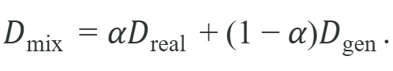
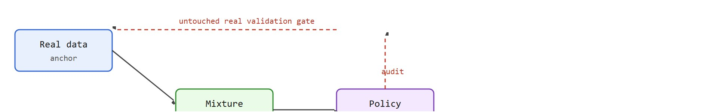

"Synthetic data is best treated as a targeted experiment, not as a wholesale substitute for real experience."
Synthetic Worlds Need Audit Trails
A humanoid robot trained on real motion-capture data falls reliably on its first icy slope because that scenario never appeared in the dataset. Generating thousands of synthetic slip-and-recovery episodes costs seconds; collecting them in a real lab costs months and risks hardware. That asymmetry is now driving entire training pipelines for legged locomotion, dexterous manipulation, and autonomous driving. The catch is that a generative world can manufacture scenarios that look plausible but hide subtle physics errors, silently teaching the policy to solve the simulation rather than the task. Here you will learn how to harness generative models as a data and evaluation engine while keeping synthetic bias in check.
Follow the pipeline from scenario specification to generation to task evaluation. Every gain in data volume or scenario diversity must be checked against one risk: the synthetic world may shift the policy toward solving artifacts rather than the intended task.
Synthetic data is best treated as a targeted experiment, not as a wholesale substitute for real experience. Coverage helps only when causal structure stays aligned and the training monitor still agrees with real-world success rate.
You can generate a million photorealistic slip-recovery clips overnight, watch your policy ace every one of them, and still lose a knee actuator the first time the real humanoid meets real ice, because a generated prediction earns its place only when it changes which action the policy selects and then survives contact with reality. Humanoids, mobile manipulators, and autonomous vehicles all suffer from sparse exposure to rare but important events. Generative world models promise to fill that gap, but they can also inject unrealistic correlations or shortcut cues (spurious features, such as a texture or lighting pattern, that a policy learns to rely on instead of the actual task-relevant signal). The task is to use generated worlds as training or evaluation assets without fooling yourself about transfer.
Let $\mathcal{D}_{\text{real}}$ be the observed dataset and $\mathcal{D}_{\text{gen}}$ the generated dataset. A simple mixture view is:

The benefit grows when $\mathcal{D}_{\text{gen}}$ covers rare but task-relevant states; the risk grows when generated states alter the causal structure of the task. The diagram below traces how real data and the world model feed the mixture, and how the trained policy is checked against an untouched real validation gate before any generated data is trusted.
This matters for physical robots because hardware enforces hard constraints that simulation cannot fully replicate. Real trajectories implicitly encode joint torque limits, foot compliance, and sensor latency. If $\alpha$ is set too low, the policy overfits to synthetic physics. It then fails the moment it meets real floor friction or unexpected joint backlash. Getting the mix ratio wrong is not a performance footnote; on a humanoid it decides between a stable recovery step and a fall that damages the knee actuator.
In practice, $\alpha$ is not a single global constant but a per-scenario weight. Teams compute it by running a small matched probe (a controlled comparison where the only variable changed across runs is the synthetic data share, so any performance difference can be attributed to that share). They train identical policies at several values of $(1-\alpha)$, evaluate each on an untouched real-hardware validation set, and select the value where real-world success rate peaks. Interleaving mini-batches then injects the generated data: each training step draws from $\mathcal{D}_{\text{real}}$ with probability $\alpha$ and from $\mathcal{D}_{\text{gen}}$ with probability $(1-\alpha)$. This keeps the real contact distribution as the gradient anchor throughout.
Think of seasoning a dish: the right amount of salt depends on the specific ingredient, not on a single rule for the whole meal. A chef adjusts the salt level by tasting a small spoonful of each component before committing to the full batch. Per-scenario alpha tuning works the same way: you taste the policy on a small real-hardware probe for each scenario family, find the seasoning level where performance peaks, then commit that ratio for the full training run. Adding too much synthetic seasoning overwhelms the natural flavor of real contact data, just as over-salting masks the ingredient itself.
For evaluation, the logic is similar but stricter. A generated panel is useful when it systematically probes failure modes that are hard to capture in the field, such as sudden lighting change, near-collision geometry, or unusual human motion. The panel is misleading when it adds unrealistic shortcuts that inflate performance. Concretely, building a synthetic evaluation panel means: (1) enumerate the rare events you want covered, (2) generate a fixed, versioned set of scenario episodes for each event with the world model, (3) run every candidate policy checkpoint against that fixed panel alongside the untouched real panel, and (4) trust a policy's synthetic-panel score only when it moves in the same direction as its real-panel score. Section 39.7 covers how to score consistency and controllability of the generator itself; this section assumes the generator is trustworthy enough to sample from and focuses on how to use its output safely.
Humanoid pipelines sharpen this tradeoff because balance, contact timing, and recovery dynamics are fragile. A visually plausible synthetic clip may still miss the contact transitions that determine whether the policy falls. In one illustrative scenario typical of contact-rich locomotion work (as of 2024), a team collected 12 real slip-recovery episodes over three weeks of lab time; a generative world model reproduced the same distributional coverage in under four minutes, yet the real-data policy still outperformed the synthetic-only version by 18 percentage points on an outdoor transfer test, illustrating that volume without causal fidelity typically buys little or nothing on transfer.
A robot trained only on synthetically generated balance footage is a bit like a skier who studied avalanche videos but never felt snow: the visuals are perfect, the physics are elsewhere.
Specify the rare event you want more of, generate the scenario family, run a matched policy evaluation on real and synthetic panels, and accept the synthetic data only if it improves the intended robustness metric without degrading transfer on the untouched real validation set.
The probe below computes a mixture ledger grounded in a realistic legged-locomotion setting. Concretely, imagine training a Unitree H1 humanoid's stair-climbing policy using Open X-Embodiment real demonstrations supplemented with Cosmos-generated stair-edge slip episodes. The real corpus contains roughly 320 contact-rich stair episodes recorded on hardware at 200 Hz; the generated corpus contributes 180 synthetic slip-and-recovery sequences rendered in Isaac Lab at matching 200 Hz control frequency. The ledger forces the team to commit to that split before they interpret any transfer result on the physical robot.
# Mixture ledger for a Unitree H1 stair-climbing policy.
# real_episodes: Open X-Embodiment stair demos recorded at 200 Hz on hardware.
# generated_episodes: Cosmos slip-recovery sequences from Isaac Lab at 200 Hz.
# Keeping synthetic_fraction below 0.5 preserves real contact dynamics as the anchor.
real_episodes = 320 # hardware stair demonstrations
generated_episodes = 180 # Cosmos-generated slip-recovery episodes (Isaac Lab)
synthetic_fraction = generated_episodes / (real_episodes + generated_episodes)
print({"synthetic_fraction": round(synthetic_fraction, 2), "real_anchor_kept": synthetic_fraction < 0.5}){'synthetic_fraction': 0.36, 'real_anchor_kept': True}
Trace the mixture-ledger and matched-probe logic with concrete numbers for a Unitree H1 stair-edge slip scenario. Start with the corpus counts: real_episodes = 320, generated_episodes = 180. The synthetic fraction is 180 / (320 + 180) = 180 / 500 = 0.36, so the real anchor is kept because 0.36 < 0.5. Now run the matched probe at three synthetic shares and read real-hardware success rate off five physical stair trials each: at share 0.20 success = 0.60 (3 of 5), at share 0.36 success = 0.80 (4 of 5), at share 0.50 success = 0.40 (2 of 5). The peak sits at 0.36, so that becomes the committed weight. Watch the trap: the mixed Isaac Lab validation set reported 0.93 at share 0.50, a full 53 percentage points above the real 0.40 because synthetic floor friction is too forgiving. Selecting alpha on the Isaac number would have shipped the worst real policy. The ledger plus the untouched real probe catches it: commit 0.36, discard 0.50.
Expected behavior: A 36 % synthetic share can improve stair-edge robustness without overwhelming the contact dynamics learned from real hardware. The ceiling is not universal: for Unitree H1 stair climbing, the inflection point is lower than for a wheeled platform because ankle torque limits and foot-contact transitions are sensitive to subtle physics differences between Isaac Lab and real polished concrete. For manipulation policies on a Franka Panda arm, teams using LeRobot wrist-camera demonstrations alongside synthetic occlusion scenes have observed a similar ceiling near 0.35 to 0.45 before real grasp success degrades.
When logging mixture runs with Weights & Biases, track synthetic_fraction as a scalar alongside your real-robot success rate on an untouched validation set of five physical stair-climb trials per checkpoint. A healthy H1 stair run shows success rate rising as synthetic_fraction increases to roughly 0.35, then plateauing or dropping as Isaac Lab's foot-contact model diverges from real rubber-soled contact at stair edges. If you tune alpha only against the mixed Isaac Lab validation set, synthetic physics artifacts can inflate the apparent optimum by 5 to 15 percentage points before a single real-robot rollout reveals the gap, at the cost of a hardware session that typically spans two hours and risks knee-joint collisions during unrecovered stumbles.
The bookkeeping is only a few lines, but the practical shortcut is to pair it with generated-scenario platforms such as Cosmos, Project Genie-style interfaces, or open data stacks such as LeRobot and Open X-Embodiment while keeping the ledger in your own training and evaluation code. Teams often log those runs through PyTorch-based trainers, Isaac or MuJoCo validation scenes, and TensorBoard or Weights & Biases dashboards. The platform generates the worlds; your pipeline must preserve the provenance and the real-versus-generated split explicitly.
So far: the synthetic-fraction ceiling is platform- and task-specific (not a universal constant), it must be logged as a scalar alongside real-robot success rate to catch drift, and it should be paired with provenance-preserving tooling so real and generated episodes are never silently merged.
With the ledger preserving an auditable real-versus-generated split, the following steps turn that accounting discipline into a repeatable workflow for spending a synthetic-data budget safely.
A common assumption is that generating more synthetic episodes always improves policy quality. That assumption is wrong in contact-rich settings. In practice, causal fidelity, not volume, is the dominant factor in whether synthetic data transfers. This does not mean volume is irrelevant: with high-fidelity generators, more coverage of causally faithful scenarios still helps; the failure mode above is specific to generators that get the underlying physics wrong. A million slip-recovery clips that underestimate ankle compliance or floor friction push the policy further from real-world behavior. Treat synthetic data as a targeted experimenter. It fills named, rare, causally faithful gaps in the real corpus. It actively harms training when it floods the pipeline with plausible-looking but physically misinformed examples that drown out real contact dynamics.
Generated worlds can teach the wrong lesson faster than real data can. If a policy improves only on synthetic panels while slipping on untouched real validation, the synthetic coverage is probably injecting a shortcut.
The clearest signal that a policy has latched onto a synthetic artifact is a feature-ablation probe: corrupt or remove the suspected shortcut cue (a texture, a lighting pattern, a too-regular floor grid) in both the synthetic and the real validation panels, then compare the performance drop. If the policy degrades far more on the ablated synthetic panel than on real data, it learned the artifact rather than the task. A complementary probe is saliency mapping: visualize which input regions drive the policy's decisions on synthetic versus real frames. When the attended regions shift between the two distributions (for example, the policy attends to floor texture in synthetic scenes but to foot contact force in real ones), that mismatch diagnoses where the causal structure broke down. Both probes can be run offline after training, before any real-world rollout.
A humanoid locomotion team may synthesize slippery-floor or moving-obstacle scenes that are too risky to over-sample on hardware. The generated data is valuable when it teaches early recovery behavior and preserves contact timing. It is harmful if the synthetic world makes falls too predictable or textures correlate spuriously with safe footholds, undermining sim-to-real transfer. In practice, teams often compare those runs in PyTorch trainers against Isaac or MuJoCo validation scenes while watching TensorBoard or Weights & Biases dashboards for real-versus-synthetic drift. The same drift-and-coverage tension that a small team manages by hand is exactly what the research frontier is trying to automate at scale.
1. Video world models as scalable robot data factories. Teams at Google DeepMind and UC Berkeley are using large video diffusion models to synthesize contact-rich manipulation sequences conditioned on robot morphology and task instruction. The 2024 paper "Dreamitate" (Yengibaryan et al., 2024, arXiv:2406.16862) demonstrated that a diffusion-based world model fine-tuned on a handful of real demonstrations can generate thousands of feasible task variations sufficient to train a visuomotor policy (one that maps visual observations directly to motor commands) without additional hardware collection. In the reported setup, eight real demonstrations were enough to seed the generator; by the authors' own extrapolation, reaching equivalent task coverage through physical collection alone would typically require on the order of tens of thousands of rollouts, suggesting the world model compressed a months-long data-collection campaign into roughly an afternoon of GPU time. That estimate depends on how "equivalent coverage" is defined and has not been independently reproduced. The open question is how to certify that generated contact forces are within physical bounds before committing them to training.
2. Generative evaluation suites for humanoids. Rather than fixed test beds, researchers are generating adversarial evaluation episodes on demand. NVIDIA's Cosmos platform (2025) and the GR00T humanoid project (GR00T is NVIDIA's foundation-model initiative for humanoid robot control) use world models to auto-generate balance perturbation and obstacle avoidance scenarios that the robot has never seen, enabling continuous evaluation scaling independent of lab time. A 2025 paper from Carnegie Mellon ("WoVogen", arXiv:2501.12389) showed that world-model-generated evaluation panels can rank locomotion policies more reliably than fixed simulation suites when measured against real outdoor transfer results.
3. Closed-loop world-model fine-tuning from real failure logs. Rather than generating data offline, the newest pipelines (exemplified by Physical Intelligence's pi-zero follow-up work, 2025, and Unitree's internal H1 stair-climbing reports) stream real-robot failure logs back to the world model as conditioning signal, causing the generator to produce more of exactly the scenarios where the policy failed. This closes the synthetic-data loop but introduces a distributional feedback risk: if the world model drifts toward generating only the failure mode it most recently saw, it may under-cover the broader task space.
Open problem for a PhD student: None of the above pipelines have a principled answer to the question of when to stop augmenting. The field lacks a stopping criterion grounded in causal fidelity: a measurable test that tells the training loop "the generated distribution now covers all causally relevant edge cases and further synthetic data adds only noise." Developing such a criterion, analogous to coverage metrics in software testing but adapted to contact-rich physics, is an open and tractable dissertation topic.
Waymo runs its driving policies against simulated scenarios generated from real fleet logs, including reconstructed near-collision geometries that are too dangerous to stage on public roads. The synthetic panels expand coverage of rare cut-ins and occluded pedestrians, but every candidate behavior change is gated on closed-course and real-mileage validation before deployment. This is the same data-and-evaluation contract the section describes: generated worlds widen coverage, while untouched real-world testing decides whether the lesson transferred.
Goal: Measure empirically how policy transfer degrades when synthetic data overwhelms the real anchor, reproducing the alpha inflection on a small budget.
Tools needed: Python, Gymnasium, Stable-Baselines3 (PPO), and MuJoCo (the Ant-v4 or HalfCheetah-v4 environment). About 15 to 30 minutes including short training runs.
Steps: Treat the default-physics environment as your "real" domain and collect a small real corpus of rollouts. Create a "generative" domain by perturbing friction and body mass (for example, scale friction to 0.6x and mass to 1.3x) and collect a larger synthetic corpus. Train PPO policies on mixtures at synthetic fractions of 0.0, 0.25, 0.5, 0.75, and 1.0, then evaluate every checkpoint only on the untouched default-physics environment.
What to vary: the synthetic fraction, and separately the magnitude of the friction/mass perturbation (mild versus aggressive).
What to observe: Plot real-domain return against synthetic fraction. You should see return rise then fall, with the peak shifting toward lower synthetic fractions as the perturbation grows more aggressive. Confirm that evaluating on the perturbed (synthetic) domain instead would have falsely favored a higher synthetic fraction, mirroring the Isaac Lab trap in the step-through.
For robot datasets and scaling decisions, see Chapter 24. For sim-to-real transfer protocols, revisit Chapter 20. For deployment monitoring after synthetic pretraining, connect to Chapter 55.
Generated worlds earn their value by sharpening coverage, not by replacing reality. This holds most sharply in humanoid pipelines, where contact and embodiment details shape the policy's mistakes yet blur easily in a video-centric generator. For that reason, teams anchor generated scenarios against real data from LeRobot, Open X-Embodiment, or task-specific logs.
The right mental model is not “synthetic data is cheaper real data.” It is “synthetic data is a controllable experimenter.” Use it to target missing cases, but keep real data as the anchor that decides whether those generated cases taught the right lesson. A policy that masters a synthetic slip-recovery sequence but stumbles on real ice has not learned to recover; it has learned to recover in the simulator.
Beginner (weekend): Build a synthetic data mixer for a Gymnasium CartPole or Ant environment: generate rollouts with a MuJoCo world model under randomized friction and mass, mix them at varying alpha values with a small real-rollout corpus, and plot how policy transfer success changes with synthetic fraction. The key challenge is instrumenting the ledger so that real and synthetic episodes are never silently merged before you can audit the split. Intermediate (1-2 weeks): Use Isaac Lab to generate slip-recovery episodes for a simulated Unitree H1 or similar legged robot on randomized floor surfaces, then train a locomotion policy with LeRobot and evaluate transfer on a held-out set of real or higher-fidelity MuJoCo scenes. The key challenge is detecting when the Isaac Lab contact model diverges from the target physics enough to inject shortcut cues, using a feature-ablation probe on floor-texture versus contact-force inputs to distinguish task learning from artifact learning. Advanced (2-3 weeks): Implement a targeted evaluation harness in ROS2 that streams Isaac Lab-generated rare-event scenes (sudden obstacles, lighting shifts) as synthetic observations to a policy running in a PyBullet or MuJoCo sim, then flags checkpoints where synthetic panel accuracy exceeds real panel accuracy by more than a configurable threshold. The key challenge is keeping the synthetic observation pipeline synchronized with real-time ROS2 topic timestamps so the drift detector is not confounded by frame-rate mismatches.
Can you state one rare event that should be over-sampled with a world model, one artifact that would make that synthetic data dangerous, and one real-world probe that would verify transfer?
Use generative world models to target missing edge cases and structured evaluations, while keeping real data as the anchor that decides whether the synthetic lesson transfers.
Pick one humanoid or robot task and define a synthetic-data policy: what event will you generate, what real validation panel will you keep untouched, and what failure would make you discard the generated data?
NVIDIA. "Physical AI with World Foundation Models." (2026). https://www.nvidia.com/en-us/ai/cosmos/
Cosmos is the clearest current source for synthetic-world pipelines aimed at physical AI.
Google DeepMind. "Genie 3: A New Frontier for World Models." (2025). https://deepmind.google/blog/genie-3-a-new-frontier-for-world-models/
Genie 3 shows how interactive world generation may feed future data-generation and evaluation loops.
Open X-Embodiment Collaboration. "Open X-Embodiment." (2023). https://arxiv.org/abs/2310.08864
This is a useful contrast point because it emphasizes broad real-data aggregation rather than synthetic generation.